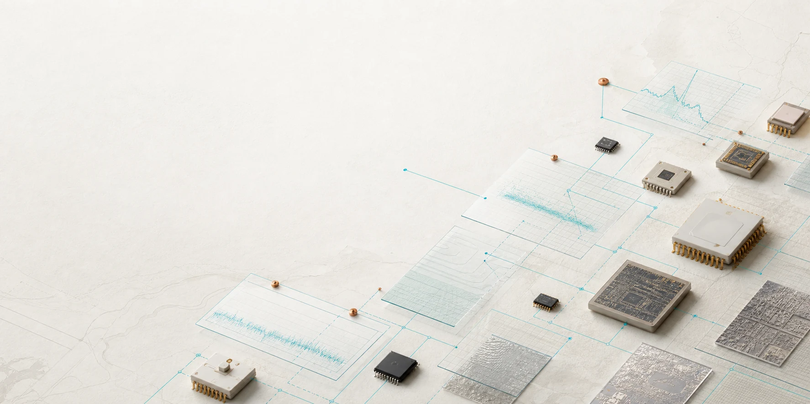
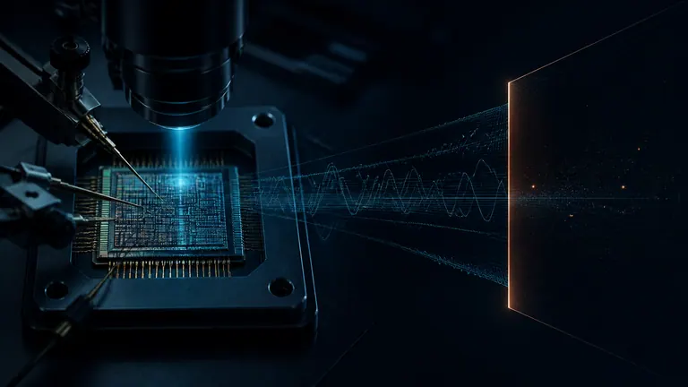

MRAM · ReRAM
掌握底層物理機制、製程節點、容量密度、寫入次數 (Endurance) 與電壓邊界。Physical mechanism, node, density, endurance and voltage boundary.
NVM KNOWLEDGE SYSTEM · UNIFIED MONOREPO 2026
將分散的技術知識庫統整為單一的高階 Monorepo 總門戶。涵蓋 Secure Storage IP、AI 加速器持久狀態、台積電 IoT (22ULL 到 N4e) 微縮矩陣、3D Chiplet 零信任架構、物理防護驗證與原生白皮書決策工作台。 NVM is the single knowledge spine unified into one monorepo. Spanning Secure Storage IP, AI persistent states, TSMC IoT (22ULL to N4e) roadmaps, 3D chiplet security, physical assurance, and native whitepaper decision studios.
00 · NVM KNOWLEDGE SPINE
掌握底層物理機制、製程節點、容量密度、寫入次數 (Endurance) 與電壓邊界。Physical mechanism, node, density, endurance and voltage boundary.
精確定義權威歸屬 (Ownership)、更新頻率、保存期限 (Retention)、安全性與故障復原。Define ownership, update cadence, retention, security and recovery.
將 NVM 技術特性對齊真實系統架構需求，而非僅僅比對產品型號。Map NVM capabilities to real system needs—not merely product names.
每項技術論述皆完整保留資料來源、邊界限制、審查日期與後續驗證動作。Every knowledge item retains its source, limit, review date and next validation action.
PERSISTENT STATE SELECTION SCHEMAPOV Scope · Opportunity Class · Evidence Relation · Assurance Maturity · Source · Limitation · Validation Gate · Internal Decision · Responsibility Owner
01 · CORE MODULE MATRIX
 01 / SECURITY ARCHITECTURE
01 / SECURITY ARCHITECTURE
SRAM PUF · AES-256 GCM · ANTIFUSE OTP · CONTROLLER
基於物理不可觀測性、掉電零留存 (Zero at Rest)、SRAM PUF 動態密鑰重構與 AntiFuse OTP 硬件熔絲，為先進 ASIC 提供安全儲存抽象。Build a defensible secure-storage abstraction from physical observability, power-off states, dynamic SRAM PUF key generation and AntiFuse OTP.
進入 Secure Storage 專題Enter Secure Storage→
XPU · DDR5 PMIC/SPD · TSMC 22ULL-N4e · 3D CHIPLET · PQC
全面評估資料中心 DDR5 PMIC/SPD Hub、AI VR 逐相微調、台積電超低功耗 IoT (22ULL/12FFC+/N6e/N4e) 0.5V 開機、3D SoIC 晶片 KGD 認證與 NIST LMS 後量子抗性開機。Covers datacenter DDR5 PMIC/SPD, AI VR phase trim, TSMC ultra-low-power IoT (22ULL to N4e), 3D SoIC KGD attestation, and NIST LMS stateful boot.
進入 AI 系統機會專題Enter AI & Advanced Nodes→ 03 / DECISION WORKBENCH
03 / DECISION WORKBENCH
VITE WORKBENCH · PHASE 1-2 READER · 40 LEDGER ROWS
完整整合第一與第二階段深度白皮書閱讀器、40 筆技術物理證據總帳、即時檢索與架構比對工具，提供流暢的技術決策分析體驗。Fully integrated Phase 1 & 2 interactive readers, 40-row evidence ledger, and real-time semantic search right inside the unified repository.
進入 Whitepaper StudioEnter Whitepaper Studio→ 04 / SECURITY ASSURANCE
04 / SECURITY ASSURANCE
FIPS 140-3 · NIST SP 800-193 · OCP CALIPTRA · DPA IMMUNITY
深入剖析 AntiFuse 奈米金屬化物理特性對差分功耗分析 (DPA)、電壓故障注入與後門植入的防禦優勢，完整對齊 OCP Caliptra 與平台韌體保護 (PFR) 規範。Analyzes AntiFuse nanoscale metallic filament resistance to DPA, fault injection, and hardware Trojans, aligning with OCP Caliptra and PFR frameworks.
查看安全保證架構Explore Security Assurance→
05 / MEMORY PHYSICS & EVIDENCE175°C AUTOMOTIVE · FILAMENT PHYSICS · TSMC N2 GAA · 40 CLAIMS
涵蓋車規 175°C 晶粒物理、金屬微絲高溫零漂移特性、多重穿隧氧化層可靠度，以及貫穿全站 40 筆嚴密審查的技術證據總帳。Covers 175°C AEC-Q100 Grade 0 physics, metallic silicide filament stability, quantum tunneling models, and 40 verified evidence ledger claims.
檢視 40 筆證據總帳View Evidence Ledger→
06 / EXECUTIVE BRIEFINGSv18 EXECUTIVE DECK · TITLE CASE · STRATEGIC FORESIGHT
收錄 Version 18 旗艦 17 頁高階技術簡報 PPTX、17 頁逐頁中英文演講講稿白皮書、以及專屬自動化重建工具，呈現最高品質企業識別與行銷戰略。Contains the complete v18 17-slide executive PPTX, 17-page bilingual speaker notes whitepaper, and automated build scripts.
瀏覽簡報與白皮書Browse Briefing & Notes→02 · NATIVE DECISION WORKBENCH
由原獨立倉庫完整整併至本地 whitepaper/ 目錄，並保留原始碼於 tools/whitepaper-studio/。具備端到端語系切換、章節跳轉、即時篩選與 40 筆公開規格證據總帳。
Fully consolidated into the local whitepaper/ path. Features seamless bilingual reading, phase switching, interactive filters, and full traceability back to industry datasheets.
ENTERPRISE REPOSITORY · ARCHITECTURE LEADERSHIP
將過往分散於多個 GitHub 倉庫的成果（Secure Storage、AI Opportunities、Whitepaper Studio、PPTX Briefings）全面匯聚於此單一 Monorepo，官方進版網址正式更名為 nvm-knowledge-hub，名實相符、文真對題。Consolidated all historical sub-repositories into this single monorepo. Formally updated to nvm-knowledge-hub for complete brand and semantic consistency.